About
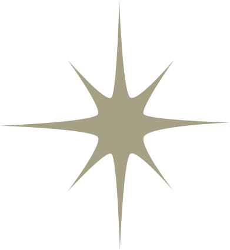
We are Amoriem Labs (or simply, Amoriem): Yale's first and only video game development club! Led entirely by students, we unite passionate gamers, programmers, artists, musicians, storytellers, and designers to bring digital worlds to life. Amoriem was founded in 2019 and has been making video games ever since. We are the place for your game design ideas and visions.
We meet every week in-person and provide food to fuel up members for a long and productive game-making session! In these meetings, project leaders will go over the previous week's accomplishments and work with members to set goals for the next week. The expectation is that members will be working at the weekly meetings and then throughout the week to meet their goals by the next meeting. A typical goal may be "design these two character animations by next week".
No experience is required! Our current members have experience in a wide variety of software (i.e. Unity) and will host robust training programs and tutorials so that you can get started quickly. This is the perfect chance to pick up new skills and put them into practice to create real tangible games.
In addition to making games, we also host game nights and participate in game jams throughout the year. If you are interested in any of the stuff mentioned so far, please join our mailing list. If you have questions or inquiries, please email us:
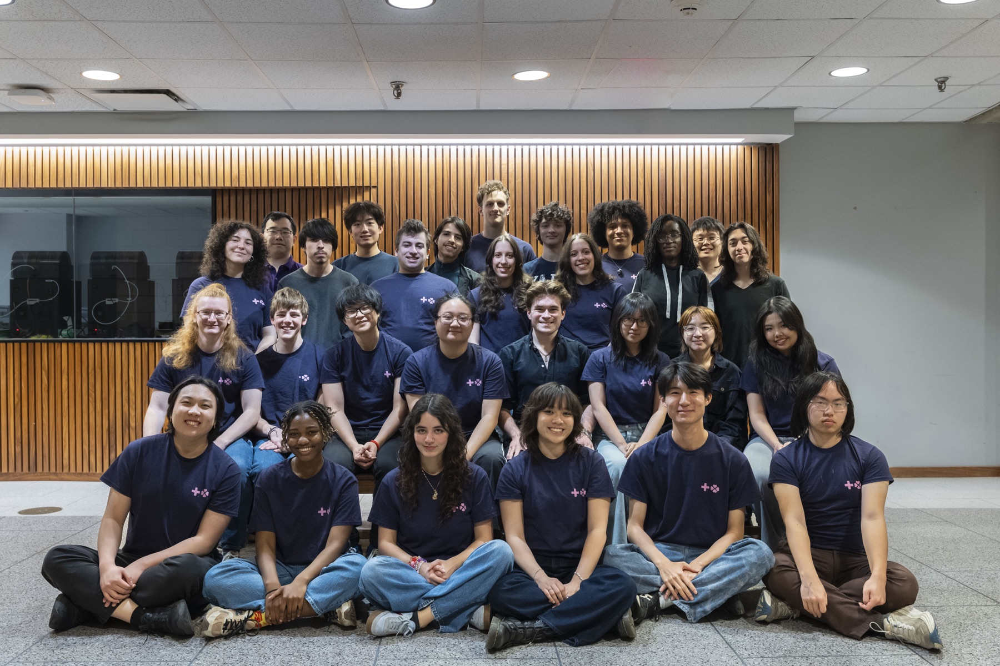
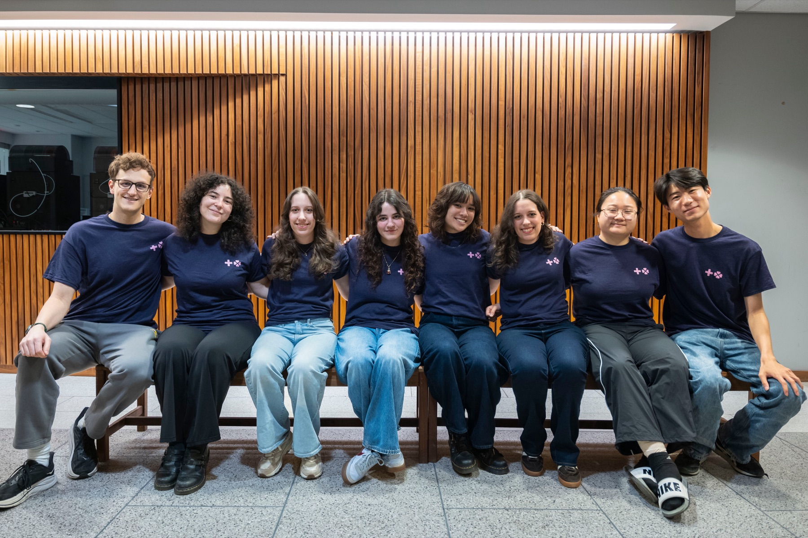
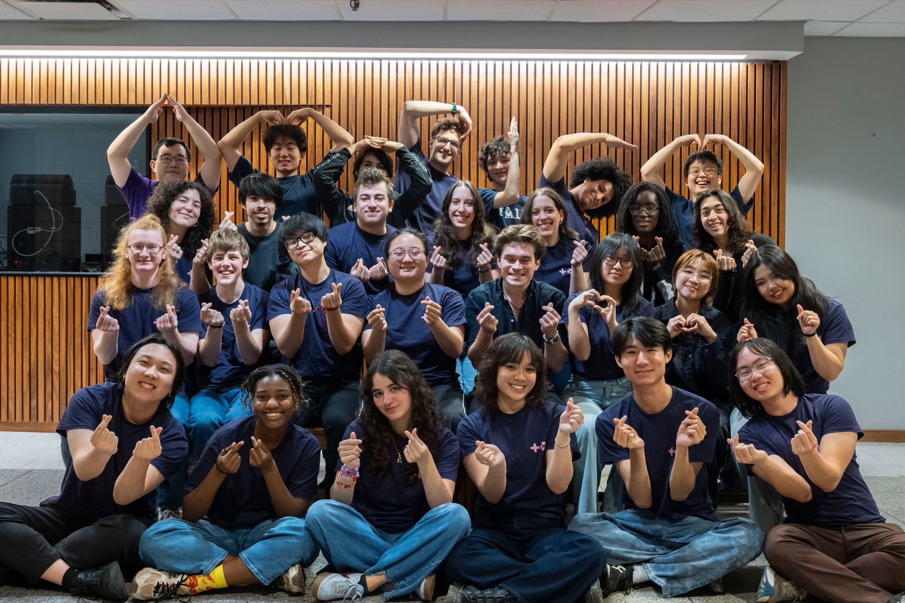
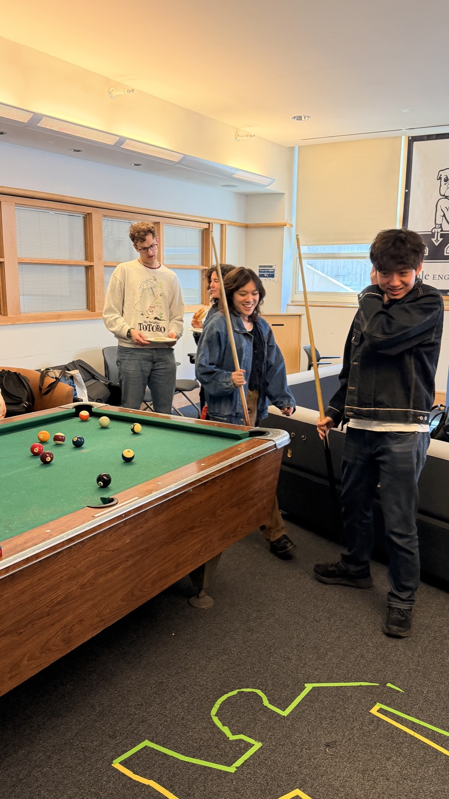
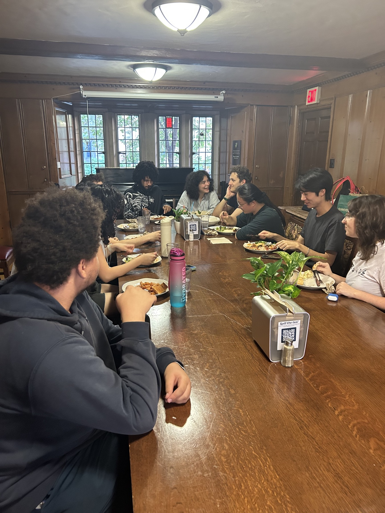
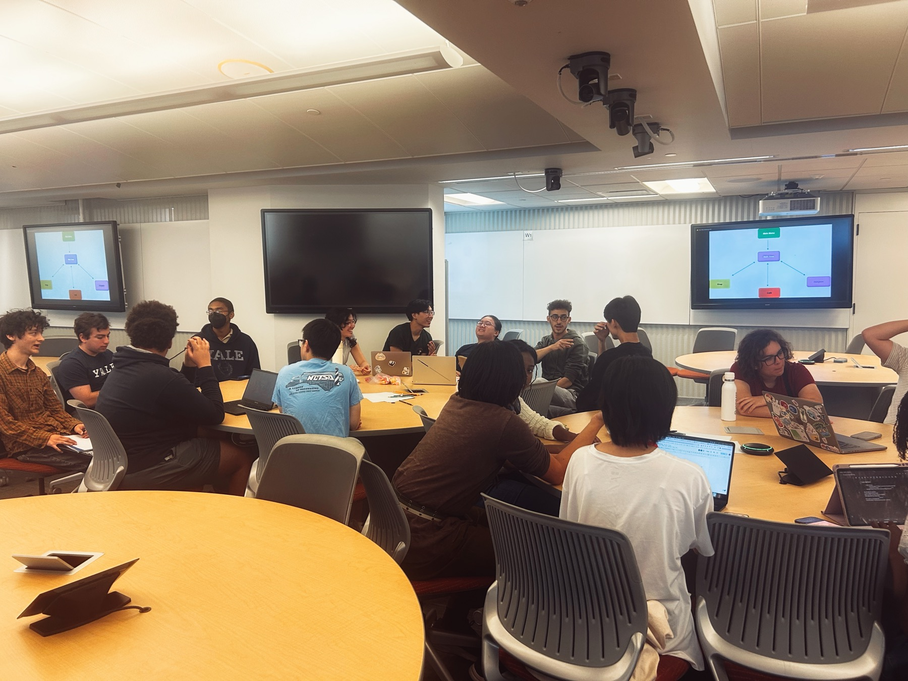
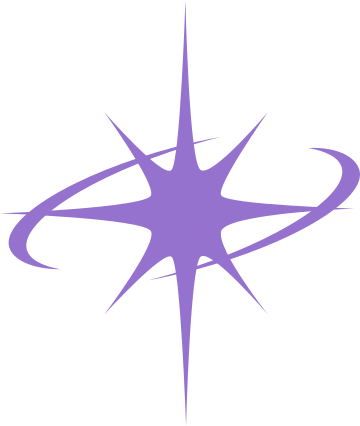
Mascot
Mori is our mascot! Designed by Chris Shia '27, Mori is a cat–ghost fusion with a hot-air-balloon-like body that is powered by an internal flame. It deflates when sad, and inflates when happy!
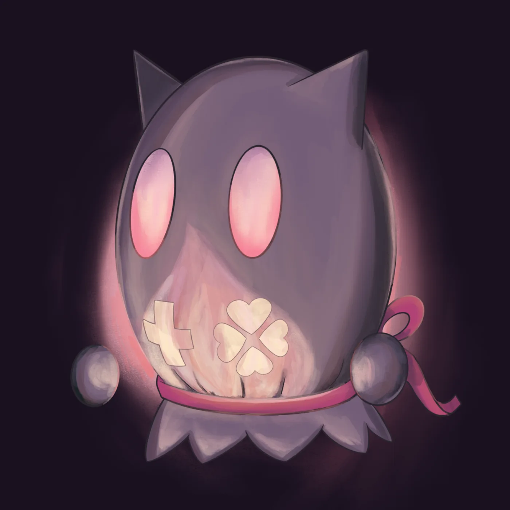
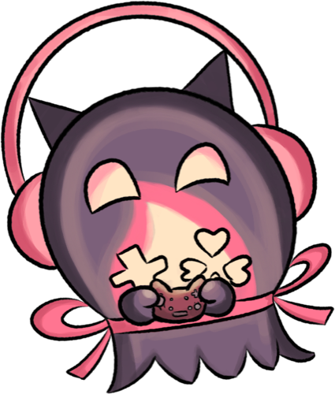
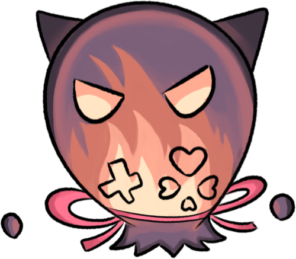
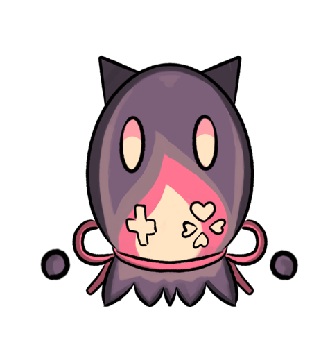
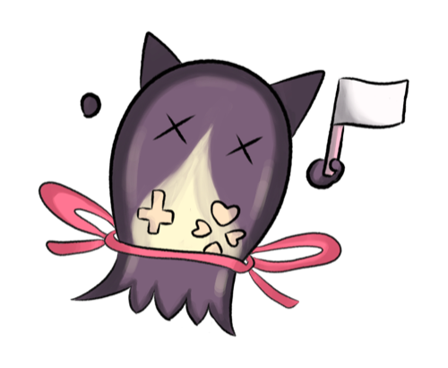
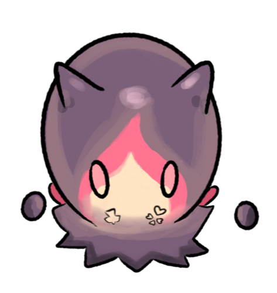
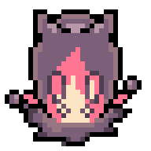
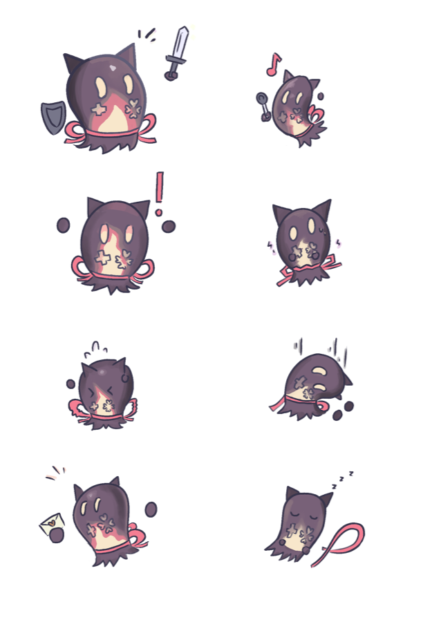
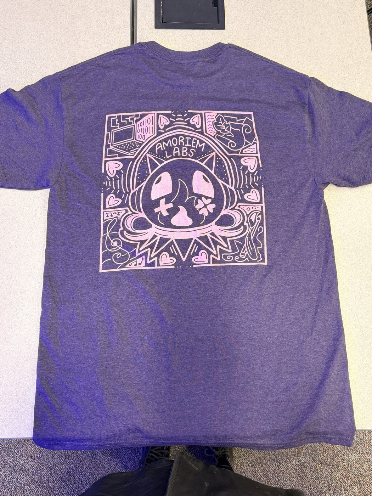
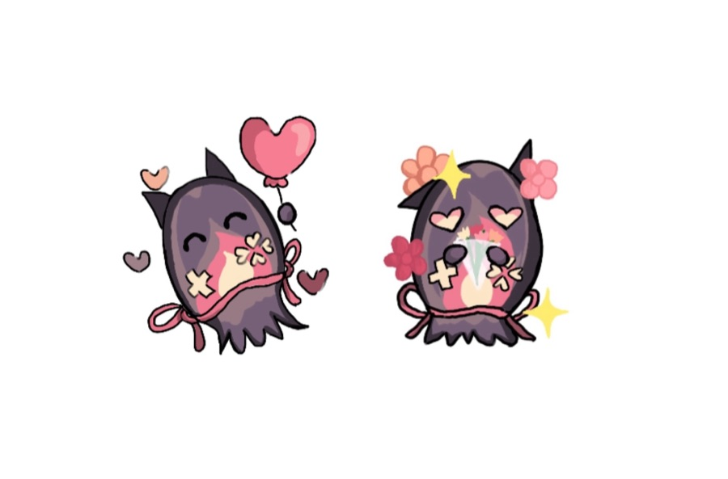
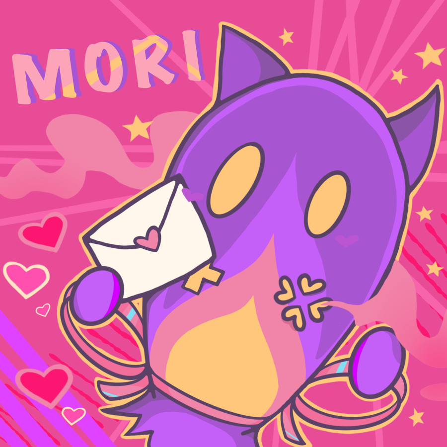
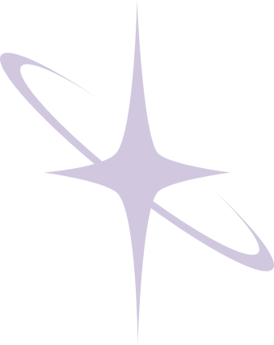
History
Once upon a time, in an ordinary evening during the winter break of 2019, Christie Yu ('22) was watching a playthrough of Toby Fox's Deltarune, the sequel to his megahit indie game Undertale. With just a few collaborators and a lot of hours during his college years, Toby Fox created one of the most influential indie games of all time. Christie, inspired by the video, sent out an email to the CS majors mailing list in order to scout for interest in a video game development club—the first and only on Yale's campus.
After receiving over twenty responses, YGames was born. The club was informal, but nonetheless met for the first time in the spring of 2019. These pioneer members worked on Amoriem the game, a dungeon-based local multiplayer game where two characters worked together to escape a complex labyrinth. The goal was to create a demo for Bulldog Days in April, where Yale's admitted students come to campus and see what the university has to offer. With a time crunch of a few months, the initial take-off for Amoriem was challenging. However, after much hard work and tireless dedication, the game was successfully exhibited to eager pre-frosh and Yalies.
Once Bulldog Days was over, the club got to work on officially becoming a club. The original official name was YGames, and then later became Yale Game Devs. Eventually, the name Amoriem Labs was chosen as a homage to the first game it created. The name is an anagram of memoria ("memory" in Latin), and includes the words amor ("love" in Spanish) and mori ("to die" in Latin). These were the three central themes of the club's pilot game. But more importantly, it has a nice ring to it. :)
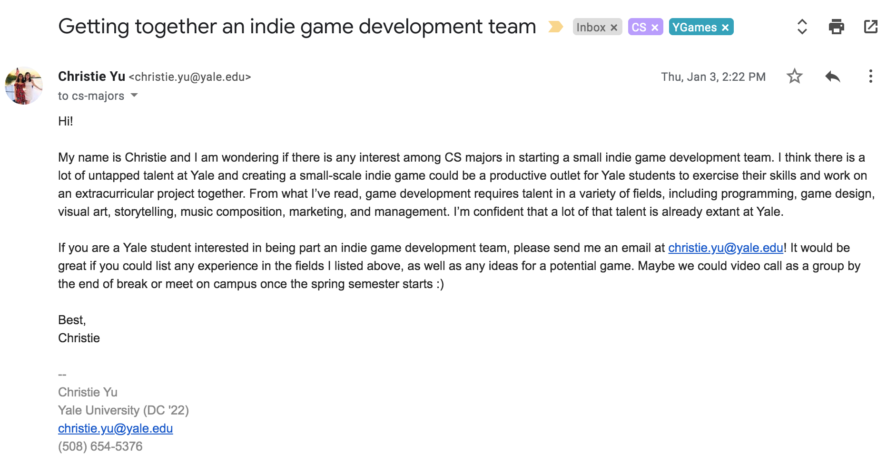